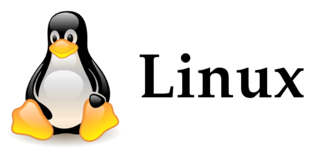
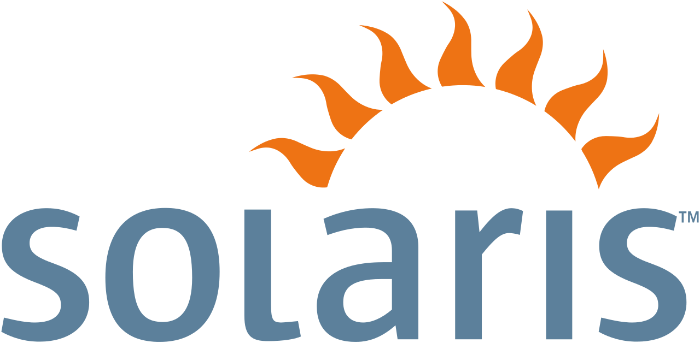

Top Sistemas Operativos Tecnologicos
Lo que debes saber sobre Windows

En 1985 Microsoft publicó la primera versión de Windows, una interfaz gráfica de usuario (GUI) para su propio sistema operativo (MS-DOS) que había sido incluido en el PC de IBM y ordenadores compatibles desde 1981. ... Windows 2.0 apareció en 1987, y fue un poco más popular que la versión inicial.
Lo que debes saber sobre Mac OS

Una breve historia del Mac OS. ... La historia de este sistema operativo en realidad empieza el 12 de octubre de 1988 cuando Steve Jobs lanza su NeXT Computer funcionando con una versión beta (0.8) de NEXTSTEP.
Lo que debes saber sobre RedHat

Red Hat Software Inc. fue fundada en el año 1994 por Bob Young y Marc Ewing. ... En septiembre de 2003, Red Hat decidió concentrar sus esfuerzos de desarrollo en la versión corporativa de su distribución, Red Hat Enterprise Linux y delegó la versión común a Fedora Core, un proyecto abierto independiente de Red Hat.
Lo que debes saber sobre Linux
En 1991, un estudiante finlandés llamado Linus Torvalds utilizó las herramientas de desarrollo de GNU para producir el núcleo Linux, completando un sistema GNU completo y operativo, el sistema operativo GNU/Linux.
Lo que debes saber sobre Solaris
El primer sistema operativo de Sun nació en 1983 y se llamó inicialmente SunOS. Estaba basado en el sistema UNIX BSD, de la Universidad de California en Berkeley, del cual uno de los fundadores de la compañía fue programador en sus tiempos universitarios. ... De esta forma Solaris 2 contenía SunOS 5.0.